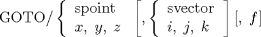

| 4.2. The Absolute Movement (GOTO) Statement | ||
|---|---|---|
 | Chapter 4. Point-To-Point Programming |  |
| 4.2. The Absolute Movement (GOTO) Statement | ||
|---|---|---|
| | Chapter 4. Point-To-Point Programming | |
The GOTO statement is used to move a tool from its current point of reference to a specified point. The tip of the cutter will be located at the specified point. The general format of the GOTO statement is as follows:
GOTO/ x, y (See Section 4.4)
The GOTO point is specified either symbolically or by listing the x, y and z coordinates. The two optional fields have exactly the same meaning as indicated in the FROM statement, and the same rules apply.
| |  | |
| Chapter 4. Point-To-Point Programming |  | 4.3. The Incremental Movement (GODLTA) Statement |